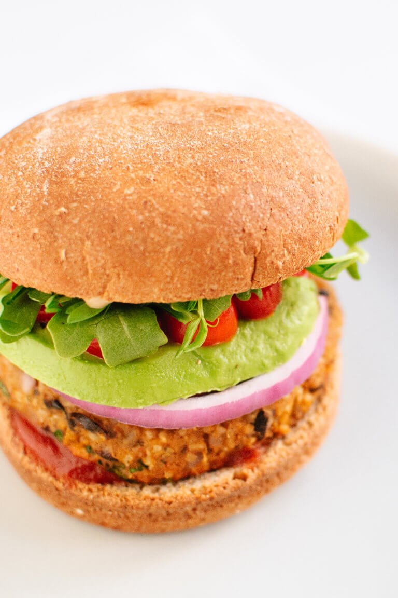

Black Bean Veggie Burgers

Ingredients:
- 1 ½ pounds sweet potatoes (smaller potatoes cook faster)
- ⅓ cup uncooked millet or quinoa (or 1 cup cooked)
- 1 cup old fashioned oats (use certified gluten-free oats if you are avoiding gluten)
- 1 can (15 ounces) black beans, rinsed and drained (or 2 cups cooked black beans)
- ½ small red onion, diced
- ½ cup lightly packed fresh cilantro leaves, chopped
- 1 teaspoon chipotle powder or smoked hot paprika
- High quality vegetable oil for cooking burgers
- Your favorite burger fixings
Instructions:
- Roast the sweet potatoes: Preheat the oven to 400 degrees
Fahrenheit. Slice the sweet potatoes down the center lengthwise.
Place the sweet potatoes cut side down on a rimmed baking sheet.
Roast until they yield to a gentle squeeze, 30 to 40 minutes or
longer. Once the sweet potatoes are cool enough to handle, remove
the skin (it should pull off easily) and roughly chop the insides.
Set aside to cool completely.
- Cook the millet: In a small saucepan, bring 1 cup of water to
boil. Stir in the millet, reduce heat to low and simmer, covered,
until tender (about 25 minutes). Drain off any remaining liquid and
set aside to cool. OR cook the quinoa: Rinse the quinoa in a fine
mesh colander, then combine with ⅔ cup water in a small saucepan.
Bring the mixture to boil, then cover and reduce heat to maintain
a gentle simmer. Simmer for 15 minutes, then remove from heat and
let the quinoa steam with the lid on for 5 minutes. Then drain off
any excess water and set aside to cool.
- Grind the oats: Use a food processor or blender to grind the
oats until the flakes are broken up, but not as fine as flour.
- Mix the burgers: In a large mixing bowl or the bowl of your
electric mixer, combine the cooled sweet potatoes and millet, black
beans, onion, cilantro, cumin, chili powder, chipotle or paprika,
cayenne (optional, add to taste for spicier burgers) and salt. Use
a potato masher, big mixing spoon or the paddle attachment of your
mixer to mix really well. It’s ok if the black beans get smashed in
the process.
- Shape the burgers: Use a measuring cup to measure out ½ cup of
the mixture. Gently shape it into a patty about 3 ½ inches in
diameter. Use your hands to gently flatten the burgers and smooth
out any jagged edges. Repeat the process for each patty; you should
end up with 8. If you would like to toast your hamburger buns,
preheat the oven to 350 degrees now.
- Pan fry the burgers: Heat 1 tablespoon oil in a large cast iron
or non-stick skillet over medium heat. When it’s hot, place several
burgers in the pan, leaving enough room to flip them. Cook each
patty until browned and heated through, about 3 to 4 minutes per
side. Add 1 tablespoon oil to the skillet for each pan of burgers
you fry.